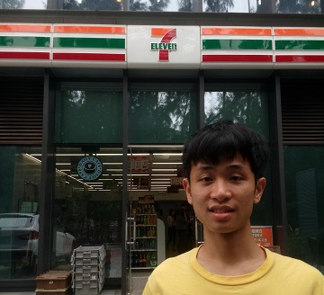
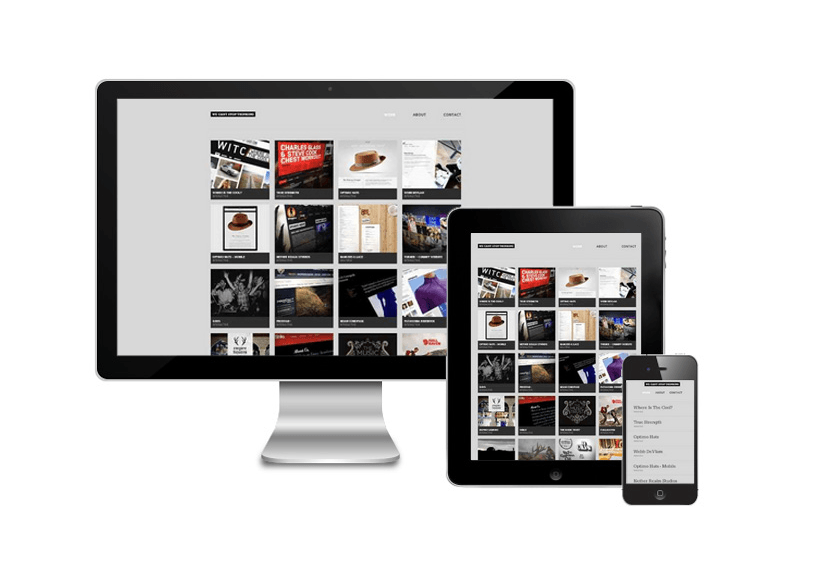
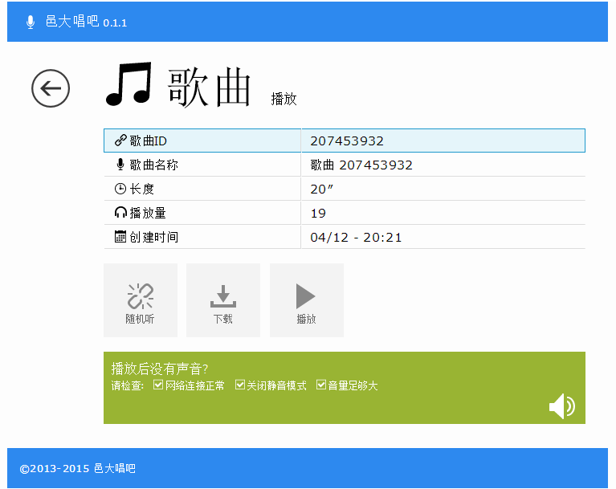
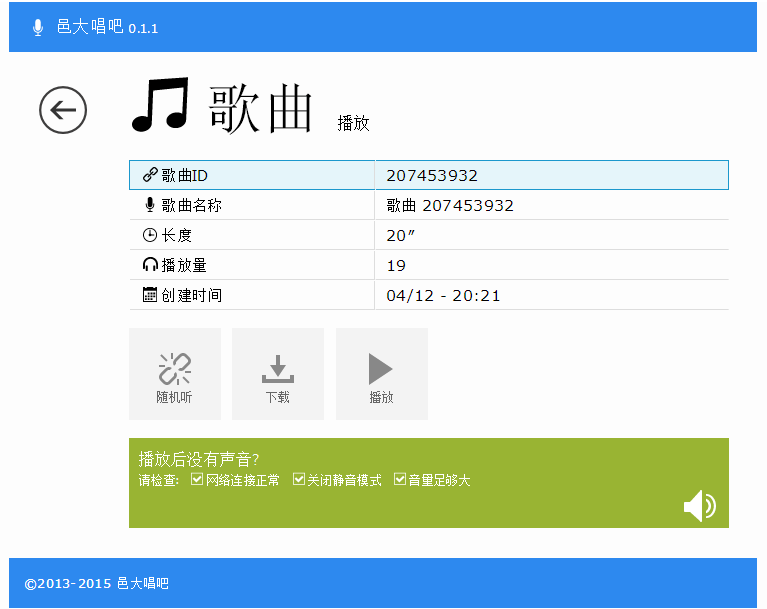
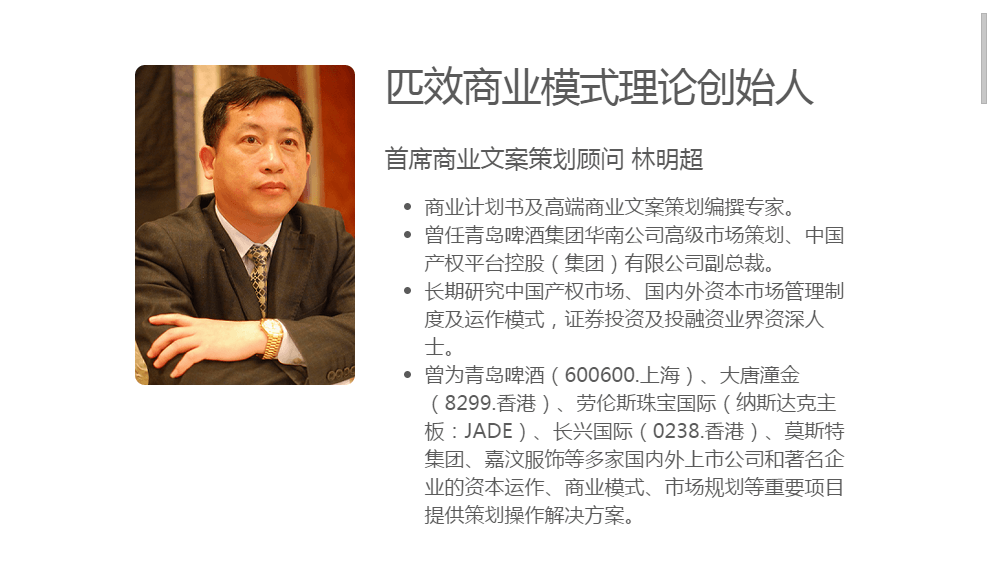

响应式设计之路
2015-04-20
10年web开发经历，对web有一定见解。

响应式由来，概述，现状

响应式网页设（RWD）是Ethan Marcotte在去年5月份提出的一个概念，简而言之，就是一个网站能够兼容多个终端——而不是为每个终端做一个特定的版本。这个概念可以说是是为移动互联网而生的！
（摘自：响应式网页设计 - 前端观察）
屏幕尺寸分类
- 767px及以下：超小屏幕（xs），手机
- 768px~991px：小屏幕（sm），平板
- 992px~1199px：中屏幕（md），桌面
- 1200px及以上：大屏幕（lg），大桌面
（摘自：bootstrap栅格系统）
适配方向
- 小屏 << 中屏 << 大屏
- 小屏 >> 中屏 >> 大屏（移动优先）
- 小屏 << 中屏 >> 大屏
响应式分级
- 基础响应式：内容完整呈现
- 进阶响应式：+基本美感协调
- 高级响应式：+全方位+人性化+强设计
响应式设计模式
- 高宽伴随/设限
- 流式/百分比
- 字体大小
- 边距/留白
- 列数增减
- 板块排布
- 部件改编
 

部件改编（1）


部件改编（2）


